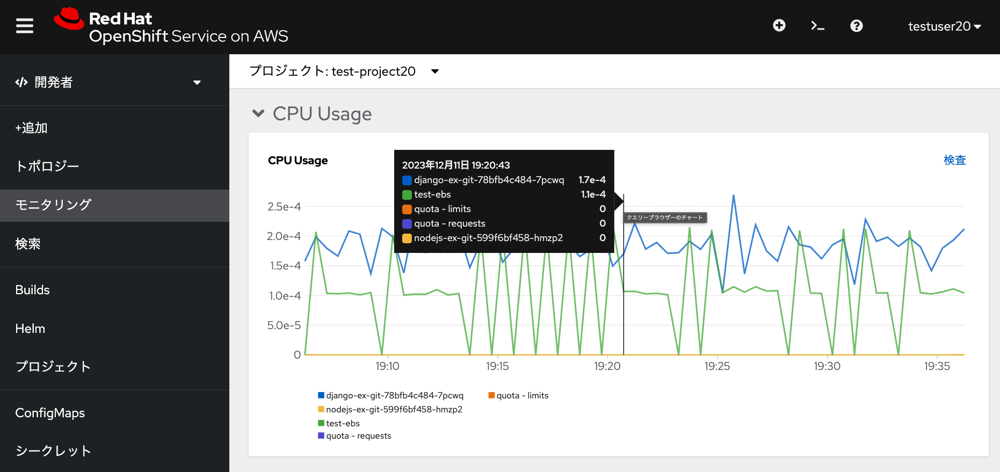
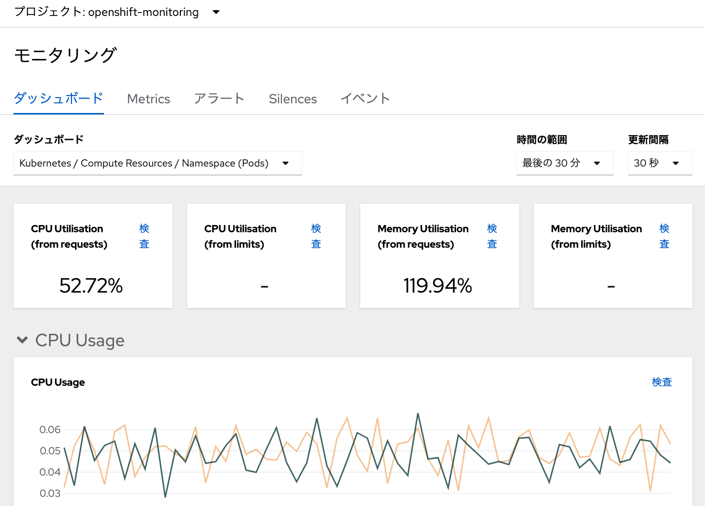
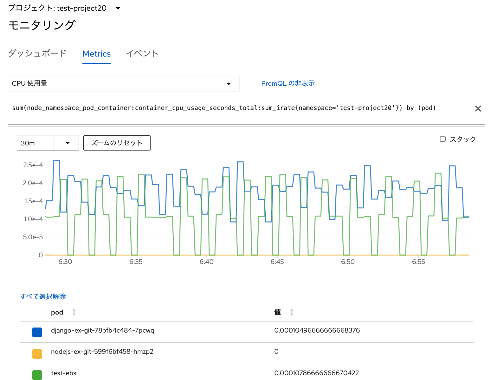
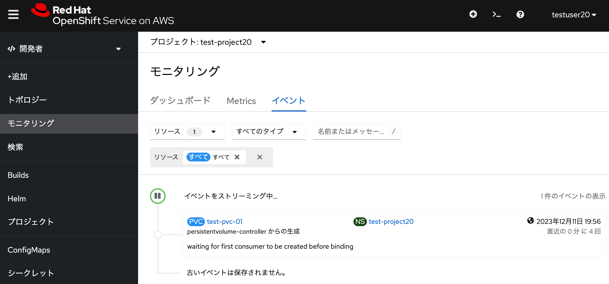

プロジェクトのメトリクスデータの確認 演習の概要 このモジュールでは、ROSAクラスターのコンソールに表示される、各プロジェクトのメトリクスデータを確認します。 「ダッシュボード」タブ ROSAクラスターのモニタリング (openshift-monitoring) で収集されるメトリクスデータを見てみます。 受講者が最初に作成したプロジェクト( test-project20 など)を選択して、 OpenShiftのコンソールから「開発者」→「モニタリング」メニューを選択すると、 CPU使用量/メモリ使用量/送受信帯域幅/送受信パケットレート/送受信パケットドロップレート/ストレージIOに関するグラフを確認できます。  また、 管理者アカウントでログインして、 openshift-monitoring などのプロジェクトを選択すると、 CPUとメモリの使用率に関する情報も確認できます。  PodのCPUとメモリ使用については、「リミット(制限)」と「リクエスト(要求)」という値があり、 Pod実行時には、予め定義された「リミット」の中で、「リクエスト」された量を確保しようとします。 各ワーカーノードに、「リクエスト」に満たないCPU/メモリリソースしかない場合、 KubernetesのスケジューラによるPod配置は行われません。 「リミット」がない場合、リクエストされた値以上のリソースが使用される可能性があります。 また、「リミット」のみ定義されている場合は、リミットに一致する値がリソースとして、 スケジューラによってPodに自動的に割り当てられます。 このダッシュボードにある、CPUやメモリの使用率は、これらの「リミット」と「リクエスト」の値に対して どのくらい使用されているか、という情報となります。 リミットとリクエストについては、 Kubernetesの公式ドキュメントもご参照ください。 「Metrics」タブ 「Metrics」タブでは、 Prometheusのクエリー(PromQL)によるグラフ表示が可能です。 予め用意されたクエリー(CPUやメモリー使用量など)を用いて、データを確認してみてください。  「イベント」タブ 「イベント」タブでは、プロジェクト上の様々な記録を確認できます。 PodやPVCなどを作成した際に実行される様々な操作記録(イベント)がストリーミングされていることを確認してみてください。 これらのイベントは、OpenShiftの様々なクラスター情報を保存する「etcd」データベースに保存されており、 保存期間は「3時間」となります。3時間を過ぎたらetcdデータベースから自動的に消去されます。 この値はAPI ServerのOperatorによって管理されています。 デフォルトの設定ファイル が利用されており、この中の event-ttl 変数で定義されています。 Operatorによってこれらの値は保護されており、 OpenShiftクラスターの利用者が編集できないようになっています。 